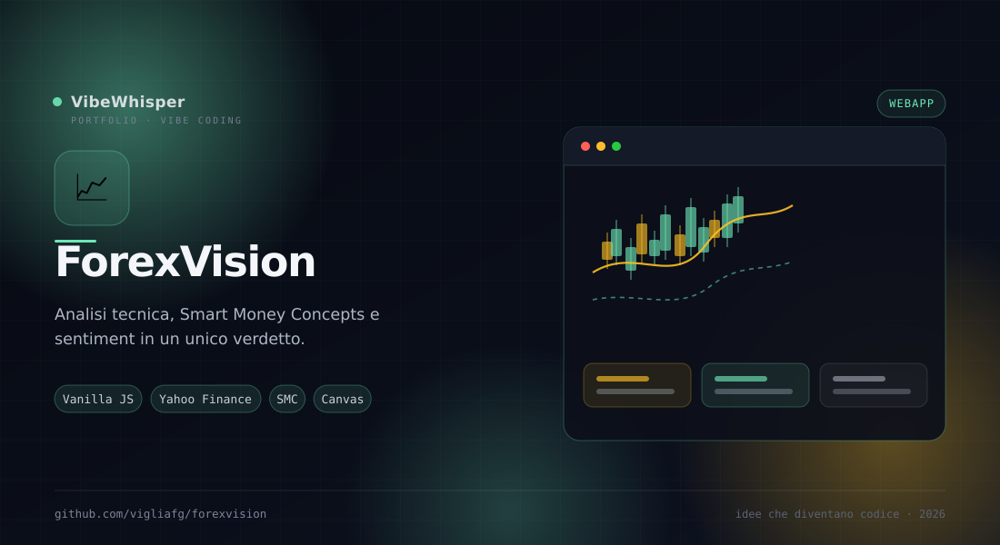

ForexVision
Webapp HTML/CSS/JavaScript senza dipendenze per analizzare il forex su tre fronti — tecnica, Smart Money Concepts e sentiment — con un verdetto di confluenza.
📖 Cos'è
ForexVision è una webapp per l'analisi del mercato forex che mette insieme tre letture diverse: analisi tecnica, Smart Money Concepts e sentiment di mercato. Ogni studio produce un punteggio, e un verdetto di confluenza li combina indicando quanti modelli sono d'accordo e con quale confidenza. Non usa framework né build step: HTML, CSS e JavaScript modulare, con grafici su canvas. Funziona sia con dati reali EUR/USD da Yahoo Finance (tramite un piccolo server locale) sia in modalità simulata, dichiarata sempre nell'interfaccia.
👤 A chi serve
È pensata per trader e appassionati di analisi tecnica che vogliono vedere più letture sullo stesso schermo, per studenti di finanza che imparano come si costruisce un segnale, e per chi vuole un laboratorio locale senza abbonamenti o chiavi API. La modalità simulata la rende utile anche per esercitarsi senza mercato aperto o senza rete.
⚙️ Come funziona
Il server locale (server.py) scarica i prezzi reali da Yahoo Finance, insieme a sentiment CFTC COT, VIX, indice del dollaro e notizie RSS, e li serve all'app in forma pulita e in cache. Senza server, l'app genera serie sintetiche calibrate su valori di mercato reali e lo dichiara. Otto famiglie di segnali tecnici vengono combinati con pesi adattivi al regime (direzionale o laterale); il punteggio diventa una probabilità con funzione logistica e la confidenza combina forza, concordanza e trend. Il backtest è walk-forward, senza look-ahead. I lanciatori avviano il ponte sulla porta 8199, aprono il browser e spengono tutto alla chiusura della finestra.
🎯 Perché ForexVision
Perché un segnale isolato dice poco. ForexVision mostra tecnica, struttura di mercato e sentiment fianco a fianco, spiega ogni card con i dati del momento e ti lascia vedere anche i limiti dello studio — compreso un backtest che non promette più di quanto misuri.
✨ Caratteristiche Principali
- Grafico a candele — EMA 9/21/50, Bollinger, volumi, crosshair con OHLC e zoom alla rotella
- Overlay SMC — Order block, fair value gap, BOS/CHoCH, pool di liquidità, premio/sconto
- Overlay extra — SuperTrend, Parabolic SAR, Ichimoku, divergenze e pivot point attivabili dal grafico
- Confluenza dei modelli — Punteggi di tecnica, SMC e sentiment in un unico verdetto con confidenza
- Studio SMC — Struttura, liquidità, zona OTE e scenario operativo con ingresso, stop e due obiettivi
- Sentiment reale — Forza delle valute, posizionamento CFTC, VIX e indice del dollaro; il retail resta un modello dichiarato
- Notizie e calendario — RSS di Fed, BCE, ForexLive e FXStreet, più calendario filtrato per EUR/USD
- Report divulgativo — Spiegazione in linguaggio semplice con glossario, copiabile, scaricabile o stampabile
- Backtest walk-forward — Hit rate, R medi, profit factor, drawdown e curva equity senza look-ahead
- Registro virtuale — Operazioni salvate in localStorage con esito manuale e hit rate complessivo
🏗️ Come Funziona
- Avvia
./avvia.sh: il ponte parte sulla porta 8199 e il browser si apre sull'app - Controlla il badge in alto: dati reali se il ponte risponde, simulati altrimenti
- Esplora le sei tab: Dashboard, Grafici, Analisi tecnica, SMC, Sentiment e notizie, Registro
- Apri l'aiuto di ogni card per leggere cosa mostra e i valori del momento
- Usa il registro per annotare un'operazione virtuale e seguirne l'esito
- Chiudi la finestra dell'app: il ponte si spegne da solo
📦 Installazione
# Requisiti: Python 3 (solo per il ponte dati) e un browser git clone https://github.com/vigliafg/forexvision.git cd forexvision # Linux / macOS: avvia il ponte e apre l'app ./avvia.sh # Windows: doppio clic su avvia.bat (o avvia.bat --stop) # Solo app, senza ponte: apri index.html # (parte in modalità simulata, dichiarata nel badge) # Opzioni utili ./avvia.sh --lan # raggiungibile da telefono/tablet in LAN ./avvia.sh --port 9000 # porta diversa ./avvia.sh --stop # ferma un ponte rimasto attivo
💡 Casi d'Uso
- Analisi quotidiana — Vedere tecnica, SMC e sentiment su EUR/USD in un colpo d'occhio
- Studio dei segnali — Capire come nasce un punteggio e quanto pesa ogni famiglia di indicatori
- Backtest e registro — Misurare una strategia e annotare operazioni virtuali senza rischiare capitale
- Didattica — Usare le spiegazioni delle card e il report divulgativo per imparare i termini